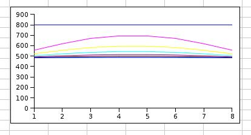
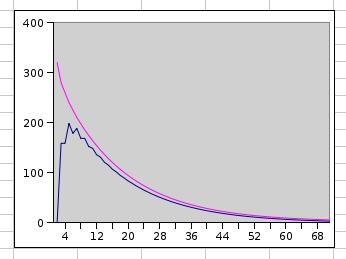

How the Glass Cools
After rapid cooling from working temperature down to annealing temperature
begins the controlled cooling.
Sometimes an intermediate soaking is necessary however.
If a large sheet, like a table top, cools from one side only,
the uderside contracts later and the temperature difference
between upper and lower surface tends to bend the sheet.
This can be avoided by intermediate soak in a higher temperature
which permits some movement. The glass sheet can 'relax' to flat.
Soaking phase
Glass like any other material expands when heated and
contracts back when cooled.
If the glass is allowed to cool too fast the surface is solidified
while the core contracts further.
T his will induce a stress in the glass that may break the glass.
Therefore the glass is cooled slowly, following determined steps.
At the soaking phase the viscosity is increased so much the the piece
keeps the form, but is elastic enough to adapt the volume change.
When the kiln cools from working temperature,
the cooling of glass lags behind. The glass is hotter than the kiln.
All heat must be transferred from the glass through the surface,
so the core is even hotter.
From historical reasons the annealing tables are formulated for
double sided cooling.
Think a vase in glassblowers annealer.
It stands freely and dissipates heat on both surfaces.
The situation is different when a fused bowl is cooled inside a mold.
All the heat must cross the upper surface.
McLellan and Shag published 1984 annealing tables for different thickness.
All annealing tables I have seen, follow this double side scheme.
Therefore I assume double sided cooling even here.
The one sided case is treated separately further down.

Fig.1. cooling of glass
The horizontal axis is time in arbitrary units,
vertical axis is temperature in centigrades.
In figure 1. is a section of glass during annealing soak,
after the kiln has cooled from working temperature 800 C
down to annealing temperature 482 C
(482 is the new Bullseye recommendation).
The curves display heat distribution across the sheet after equal time intervals.
The surfaces (left and right) cools rapidly to surrounding air temperature,
while the core remains much hotter.
Glass is not a good thermal conductor and it takes time to transfer the heat
from the core to the surface and from the surface into air.
The successive lower curves sre more flat. When the 'downhill' gradient diminishes,
the heat transfer rate gets slower.
In Fig 2. This is illustrated in another way.
 Fig. 2. Dissipation of heat
The horizontal axis is time and vertical is temperature.
The units are not important.
The upper fuchsia curve illudtrates the 'thermal mass' of the piece.
One is temped to regard soaking as a static pahase.
The fuchsia curve tells that a great amount of heat
- about one third of the total heat stored in the piece -
is dissipated during soaking.
The lower blue curve descrines the temperature difference
between the core amd surface.
The difference rises fast in the beginning when the surface cools.
Then the diffference declines slowly when the cooling
reaches the core and the surface is kept in the soaking temperature.
The soaking is completed when the difference is 5 C,
Asymmetric cooling
In the kiln work the glass lies on the shelf or inside a mold.
It cannot cool double sides like the annealing tables assume.
The kiln shelf conducts heat even slower than glass.
It forms an insulating layer that slows down cooling.
The glass cools faster from the upper side.
Therefore the slowest cooling point is not in the middle of glass but deeper.
The distance the heat must cross grows longer.
In the case of thin 3-9 mm glass the hottest point is *under* the glass.
The kiln shelf cannot carry heat as fast as glass.
The heat must therefore travel across the whole thickness of the sheet,
not only from core to surface.
The rule is: select the soak time that corresponds the double thickmness.
In the case of thick glass the hottest point stays within the sheet.
In theory one could soak for less than double thickness
but it is better to err on the safe side.
The role of thikness
If we double the thickness, the distance heat must cross is doubled, too.
At the same time the thermal gradient,
the steepness of the 'downhill' i is halved and the heat moves more slowly.
The total effect is that when the thickness is doubled the cooling times
grow four times longer.
With thin glass the extra time needed is masked by
the cooling of the kiln shelf.
In the annealing tables the soaking times are only doubled with thickness.
I do not know reason to that. Personally I do soak longer.
Solidification, the Annealing Proper.
In the soaking the glass has released a remarkable amount of heat
and finally settled in thermal equilibrum.
The thermal difference nowhere in the piece
should not be over 5 C.
From that point begins the annealing proper,
where the formation of stress is eliminated.
This segment involves slow cooling of the kiln ,
so that the 5 C difference is never exceeded.
This continues so ong that even the core is solidified.
After that the glass is so much solidified that it can take a
10 degrees C thermal difference without inducing permanent stress.
After this second annealing phase the glass is solid but still too hot.
Unfortunately we do not have means to measure
the temperatures within the glass. T
hat is the reason we have to rely on Annealing Tables
which are based on long series of experiments.
Final cooling
After the transition from liquid to solid is passed, the annealing is completed.
The glass is still very hot and one must take some care that a short term
thermal shock does not break the piece.
Fig 3. describes the graphically the whole annealing sequence.
The upper curve presents the glass temperature during the process.
The angular fuchsia line is Byllseye's annealing program.
In the soaking phase the glass temperature falls neat the kiln temperature.
In the first annealing stage the glass is kept 5 C over the kiln temperature.
At the second stage after annealing proper,
the difference can be increased to 10 degrees C without risk.
Many kilns cool naturally slower than that,
so one may need not program for it..
When the kiln has reached room temperature,
the core of the glass may be still at 50 C or more.
A thermal shock is possible if the piece is lifted from the kiln on a cold surface.
I prefer to protect it with a towel or newspapers.
It is wise to let really thick pieces 'calm down a day
before washing or cold working.